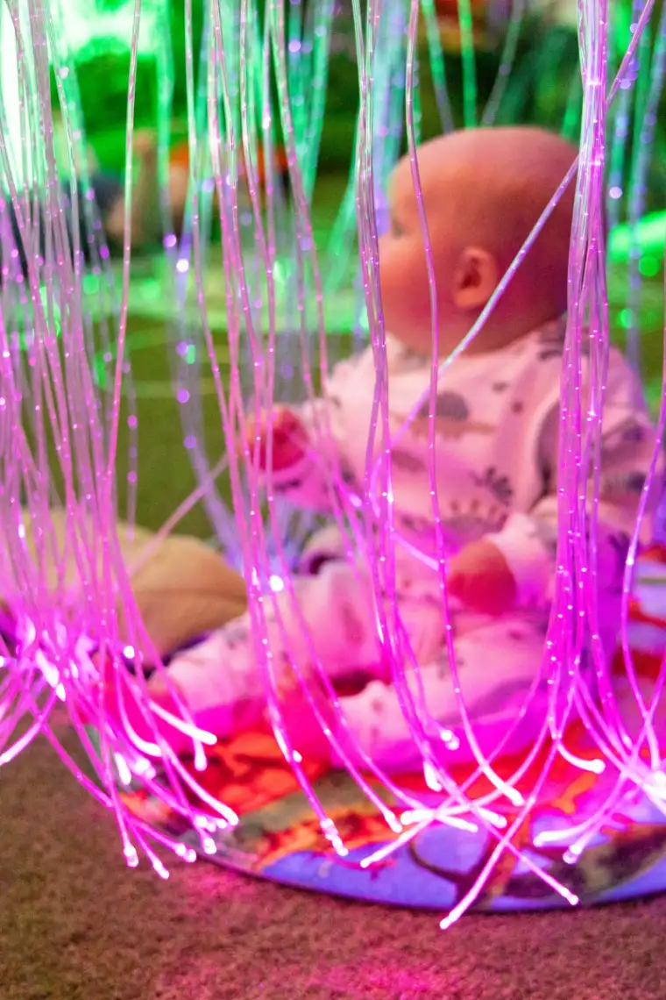
Babies onlyPre-Walking Playtime
For babies who aren't walking yet. Parents who'd like their little one to be only with other tiny babies book here.
£10per baby · 1 hour
The Yard, Burnopfield, NE16 6PT · Pre-booked sessions only
A spectacular, multi-themed immersive sensory room for babies, toddlers and young children. Family-run and deliberately quiet, for little ones who find busy play spaces too much.
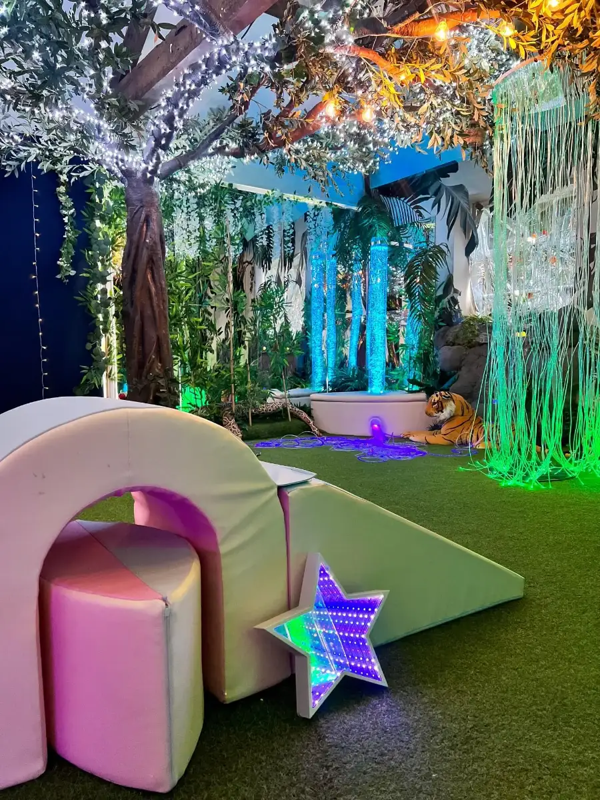
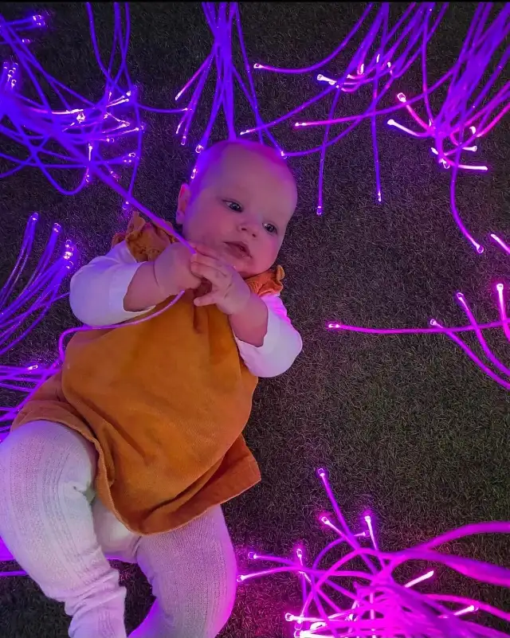
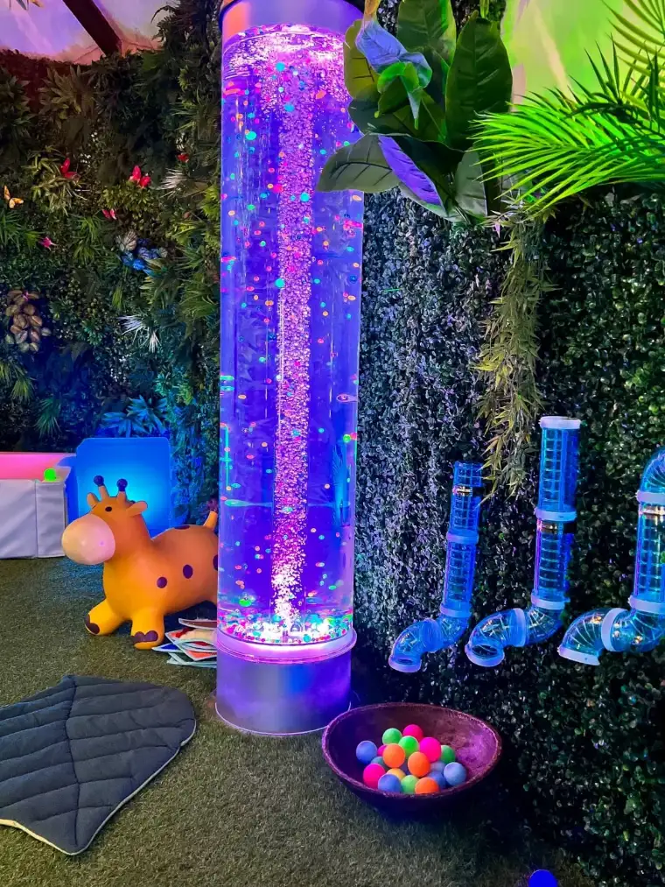
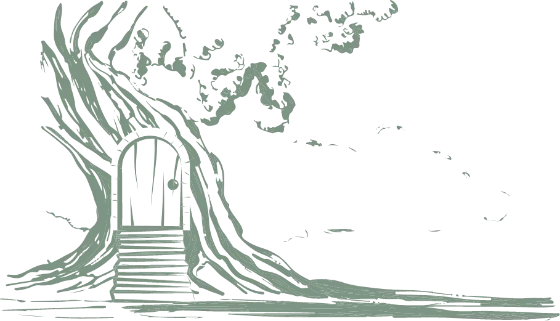
We built Wonder for children who do best somewhere gentle and quiet. It's particularly well suited to autistic and neurodivergent children who may find traditional play spaces overwhelming, and it's a peaceful alternative to busy activity venues for every family.
Fibre-optic waterfalls, bubble tubes and colour-changing pods that soothe rather than startle.
Gentle sensory music, kept low, so the room never feels noisy or busy.
Ball pits, soft-play arches, textured walls and toys chosen for tiny hands.
Every visit is pre-booked, so the room is never crowded. Pick a shared session, or take the whole room for yourselves.

Babies onlyFor babies who aren't walking yet. Parents who'd like their little one to be only with other tiny babies book here.
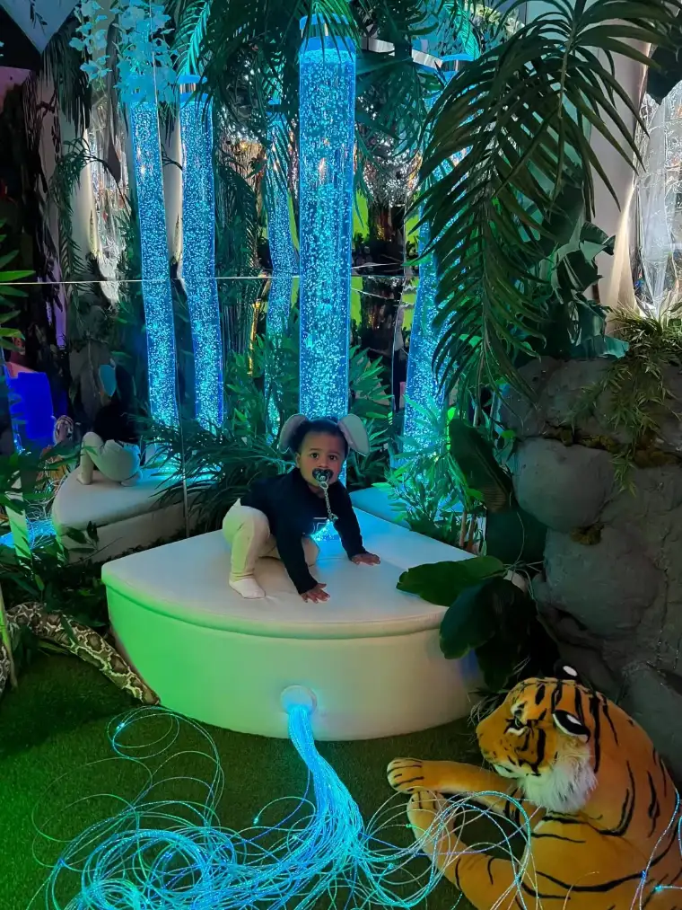
All agesOur mixed-age session. Attend alongside other parents and children who've booked the same one-hour slot.
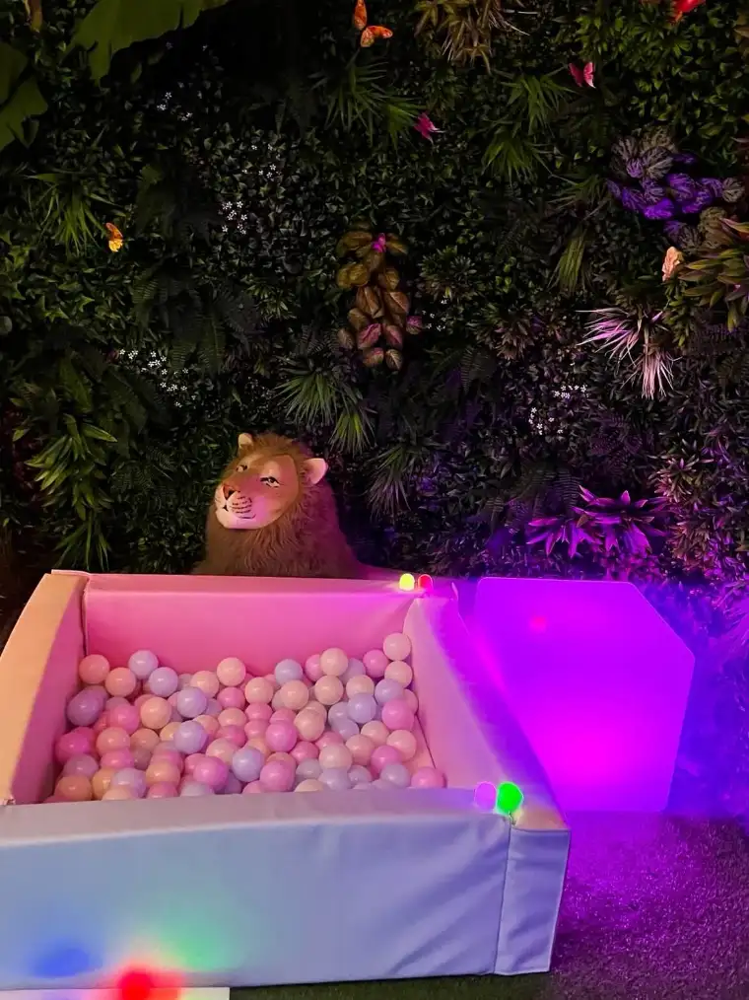
ExclusiveThe whole room, just for you. Ideal if your child prefers a quieter space, needs more room, or does best without other guests.
Celebrate a first birthday or a small milestone with exclusive use of the room, all the toys and equipment, and sensory music. Suitable for up to 7 children with one adult each; maximum venue capacity is 25 people. Themed hire is available when a special theme is running.
Weekday sessions run from 09:30, weekends from 10:00. Tap any slot to book it on our secure booking page.
This timetable is kept up to date by hand and was last checked on 11 September 2026. The booking page always has the final word on what is free.
First visits are easier when nothing is a surprise. Here is how a session runs from the car park to the door.
Limited free parking on site. If it is full, there is street parking nearby. Look for the roadside signs for Wonder Sensory and Wonder Café.
Come to the door just before your slot. Sessions run back to back, so the room is reset between groups.
Lights are already low and the music is gentle. Take as long as your child needs at the door before going in.
Explore the lights, the ball pit and the soft play. A member of staff is on hand throughout.
Spare clothes, a bottle or beaker, and any comforter your child relies on. Socks are a good idea for the soft play.
Tell us anything that would help before you come. A private session is often the gentlest way in for a first visit.
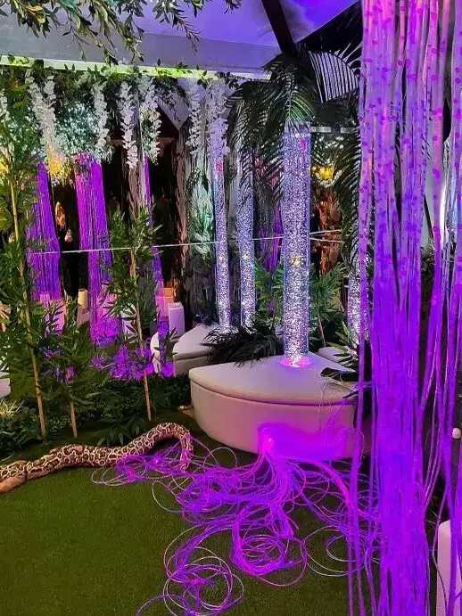
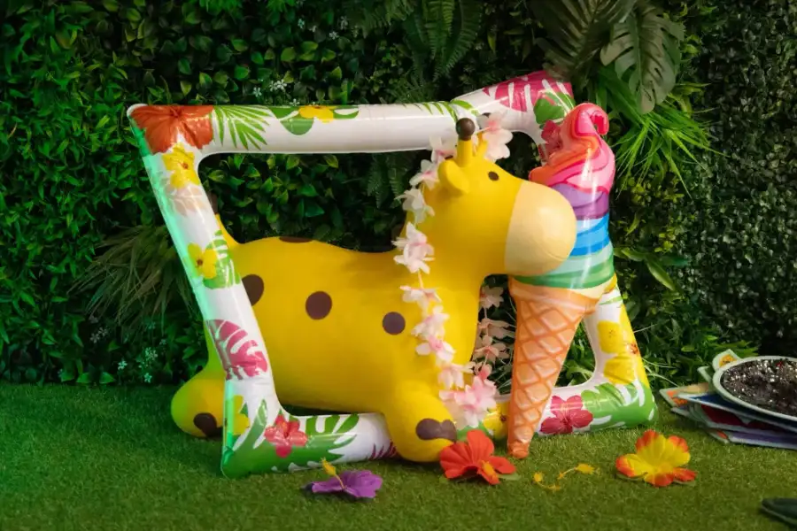
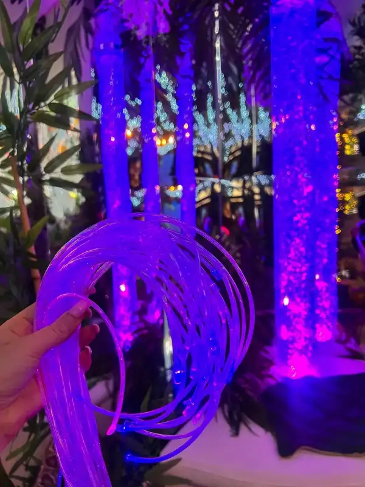
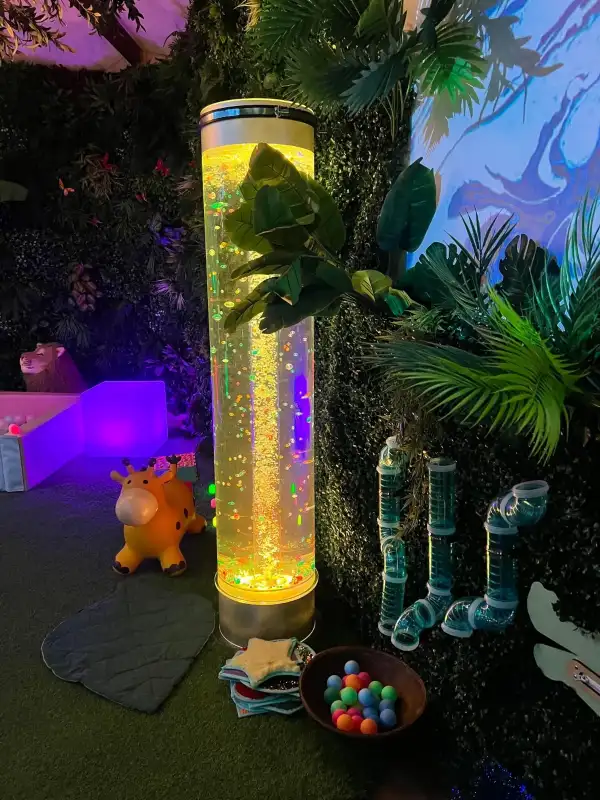
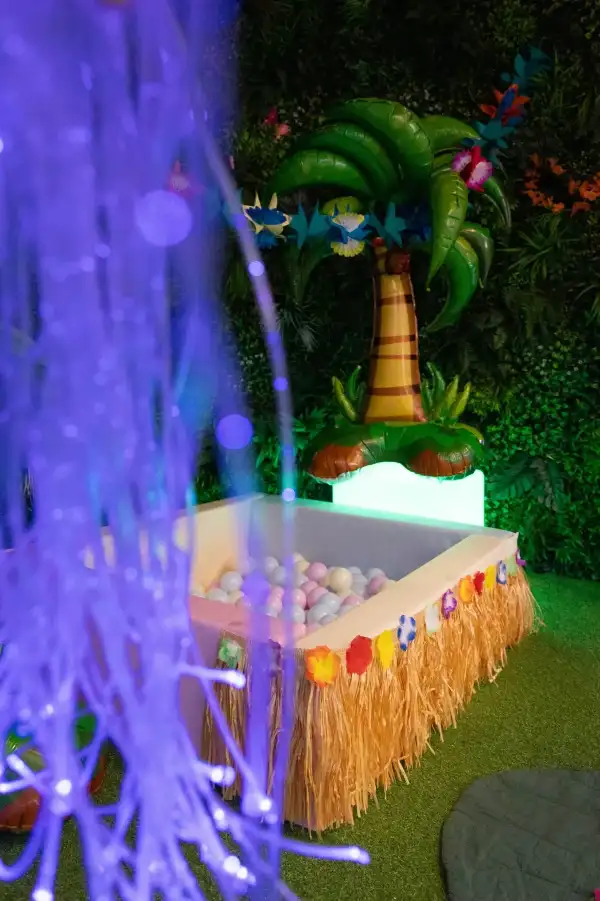
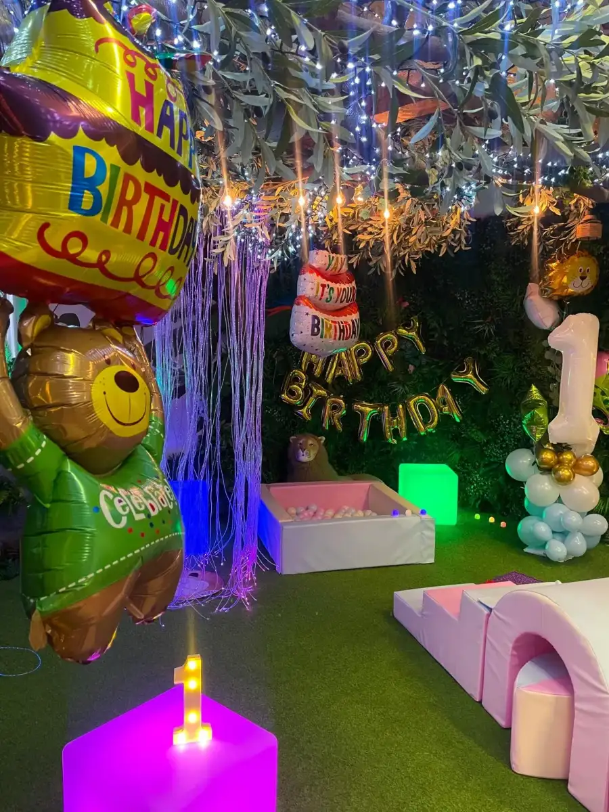
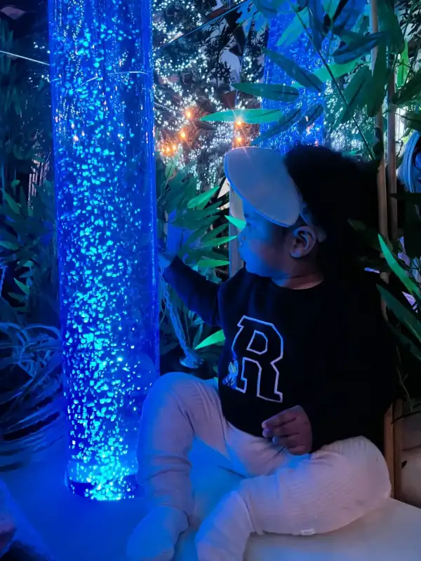
Every family who has reviewed us on Facebook recommends Wonder. We would rather you read them in their own words than ours.
Homemade cakes, freshly baked scones and barista-style coffee, matcha and more, in a calm, welcoming space inside The Yard. Brunch, bagels, waffles and a kids menu too.

Wonder is a sensory room based in the North East of England. Our aim was, and remains to be, to create a vibrant, calming, yet stimulating atmosphere that will awe-inspire adults and provide a beneficial sensory experience for babies, toddlers and those with special needs.
We have pre-walking baby slots for parents who'd like their little ones to be only with other tiny babies, and open slots for mixed ages.
Pick a slot on the timetable or use the Book a session button, which takes you to our secure online booking page. You can also get in touch, or message us on Instagram and Facebook.
Not for the sensory room. All bookings must be made prior to arrival and we don't accept walk-ins. Pre-booking is how we keep every session calm and small.
Wonder Café is a separate space on the same site. See the café page.
For open and pre-walking sessions we ask that no more than two adults attend per child. Tickets are per child, so if you're bringing two children you'll need two tickets. Private hire allows one adult per child, with additional adults at £3 each.
The Yard offers limited free parking. If the car park is full, street parking should be available in the surrounding area.
We have a safe venue that will always have a member of staff on hand. They take the safety of your children with maximum importance and will be ensuring their safety throughout your visit.
Please get in touch as early as you can if your plans change or your little one is poorly.
In the former Masonic Hall building, around 30 minutes from Newcastle and 20 from the MetroCentre. Look for the Wonder Sensory and Wonder Café signs at the roadside.
The Yard, Burnopfield,
NE16 6PT, United Kingdom
Enter ///newly.highbrow.grove for door-precise directions.
Choose a pre-walking, open or private session and pick a time that suits your little one.